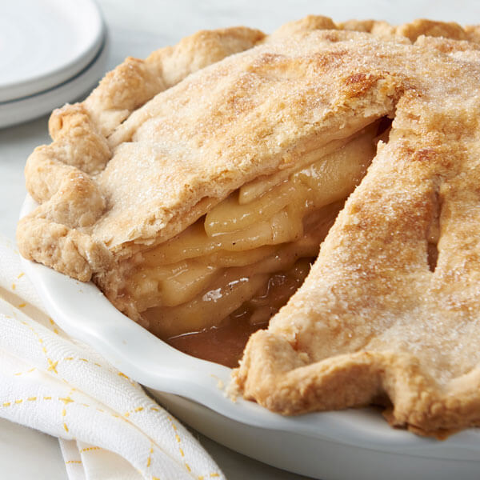

Apple Pie Recipe

Detailed Description Below
My mom's Easy Apple Pie is the dessert that I grew up on, and my own children now describe it as "perfect!" This simple, quick treat takes advantage of a shortcut store-bought crust -- and nobody will ever know! With plenty of fresh apples and warm spices in the filling, this is the best easy apple pie recipe you'll ever taste.
Ingredients
- 1 box (14.1 oz.) refrigerated pie crusts
- 6 cups peeled, thinly sliced Granny Smith apples
- ¾ cup sugar
- 2 tablespoons all-purpose flour
- 1 tablespoon lemon juice
- ¾ teaspoon cinnamon
- ¼ teaspoon nutmeg
- ¼ teaspoon salt
- Optional for serving: vanilla ice cream or whipped cream
Steps
- Preheat oven to 425° F. Bring refrigerated pie crusts to room temperature.
- Unroll 1 pie crust and press it into a 9-inch glass pie plate. Cover and chill the crust for 10-15 minutes while you prepare the filling.
- In a large bowl, toss together all of the filling ingredients.
- Transfer filling to the pie plate. Unroll the second pie crust and place it on top of the apples.
- Tuck the extra top crust under the bottom crust edge, pinching together with your fingers to seal.
- Cut slits in the top of the pie (to allow steam to vent).
- Bake for 40-45 minutes, or until apples are tender and crust is golden brown.
- Cool pie on a wire rack for at least 2 hours before slicing and serving.